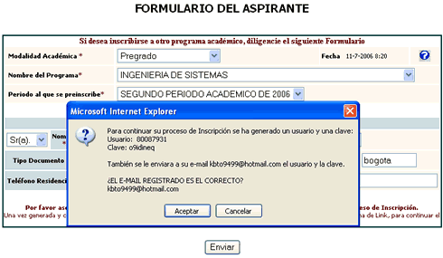
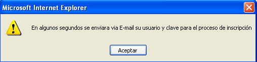

Para realizar una preinscripción se deben realizar los siguientes pasos:
Paso 1
Ingrese su documento actual y oprima el botón “Ingresar”

Paso 2
Seleccione una Modalidad Académica (Educación a Distancia, Educación Continuada, Postgrado, Pregrado, Colegio).
- Luego seleccione una carrera y posteriormente seleccione el periodo al que se quiere inscribir.
- Llene sus datos personales en el formulario que se encuentra en la parte inferior (Los campos con asterisco rojo son obligatorios). Si usted es estudiante de la Universidad El Bosque no deberá ingresar sus datos. Al finalizar hacer clic en el botón “Enviar”
Paso 3
Al enviar el formulario aparecerá una ventana de confirmación, donde se asignara un usuario, una clave y se pedirá confirmación del mail digitado ya que ahí se enviaran la clave y el usuario.
- Oprima el botón “Aceptar”
- Y nuevamente oprima el botón “Aceptar”

↓

Paso 4
Luego sale una ventana donde presentarán las carreras a las cuales se ha inscrito el usuario y adicionalmente se podrá su orden de pago para el formulario y la inscripción. Hay carreras donde no se cobra formulario, o no se cobra la inscripción o ninguna. Además puede inscribir a otra carrera realizando los mismos pasos.
Paso 5
Para generar una orden de pago se debe hacer clic en número de la orden “Nº Orden”, donde será enviado a una pagina en la que se mostrarán los detalles de la orden de pago.
Paso 6
Al hacer clic en el botón de “Imprimir orden para pago en bancos” aparecerá una ventana conlas especificaciones y requerimientos para poder imprimir correctamente la orden de pago.
Si se cumplen los requerimientos solicitados, hacer clic en el botón de “Certifico”, el cual abrirá la página de previsualización del recibo de pago para bancos, en la cual haciendo clic en el botón de imprimir se podrá proceder con la impresión.
También se realizar el proceso de impresión mediante el botónde “Imprimir” que se encuentra en la ventana donde aparecen los datos del estudiante y las carreras a las cuales se ha inscrito.